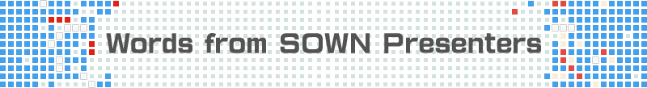

- Business Day
- 2016.9.15[THU]-16[FRI]
- Public Day
- 2016.9.17[SAT]-18[SUN]
- Venue
- Makuhari Messe
TOP For Exhibitor Sense of Wonder Night Message From Winners

Award Winners of 2015

- Mushroom 11
- Itay Keren. / Untame
- BEST GAME DESIGN AWARD
As always in Global Game Jam event, all games must revolve a certain theme in some way. The theme was the Ouroboros, or the snake eating its tail.

- Plug & Play
- Mario von Rickenbach, Michael Frei / Etter Studio
- BEST ARTS AWARD / AUDIENCE AWARD
That is a mystery.

- Reelblade: Battle of the High Seas
- Yuichiro Katsumoto / Project Reelblade
- BEST THECHNOLOGICAL GAME AWARD
「鞭から剣へと瞬時に切り替わるニンジャトラックの特徴を活かした、幅広い年齢層が楽しめる体感型のゲーム」という私たちのリクエストに対して、SUTD Game Labは「鞭状態でモンスターを釣り上げ、剣状態でモンスターを倒す、アクションゲーム」に仕上げてくれました。

- Tough Coded: Live
- Fernando Sarmiento / Little Nando
- BEST EXPERIMENTAL AWARD / BEST PERESENTATION AWARD
Tough Coded: Live is a Live Videogame Experience. It's sort of like an audiovisual experience. The idea comes from my VJ years.
Past Award Winners

- Kyoto
- by Eddie Lee|2013 Best Arts Award
The game "Kyoto" was a homage to the beautiful city that I've lived in. When I first moved there, I was so in awe of the beauty and majesty of the city that I wanted to pay homage to it in the only way I knew how -- which was to make a interactive game experience out of it!

- Miegakure
- by Marc ten Bosch|2014 Best Experimental Game Award
I had the idea for a hyper-dimensional game in college, maybe around 2005? When you program a 3D game, every object’s position is represented using three numbers (usually called x, y and z), but that concept easily generalizes.

- Mirage
- by Mario von Rickenbach|2013 Best Experimental Game Awards
Mirage was first of all an experiment with the goal to create an interesting character. From that starting point I started developing the world and the visual style around it.
- 8BitMMO
- by Robby Zinchak|2014 Best Technological Game Award
Ultima Online was the first MMO I played when I grew up. It was very impressive to see so many players all across the world play the same game! I wanted to be able to build the world together with my friends. I began building early builds of a game that allowed multiple people to build in the world together. It was very basic, but even early on it was fun to build together.

- PICOLECITTA
- by TECO|2014 Best Presentation Award
I frequently played video games with my friends and family. In that setting, the question that was always in the back of my mind was whether there was a game that more people could enjoy playing together.
![Open For Booth Application [Application Deadline] May 31(Tue) [Exhibitor Briefing] July 1(Fri) / Download TGS 2016 Exhibit Data](../common/img/bnr_recruitment.png)